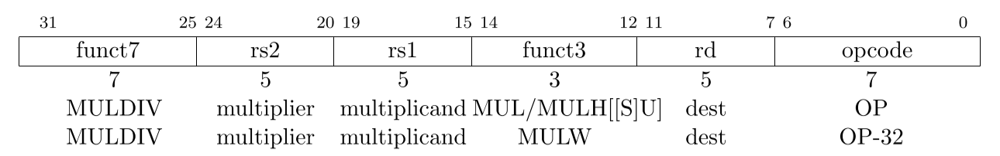
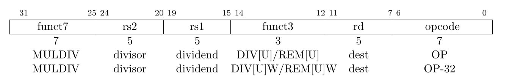
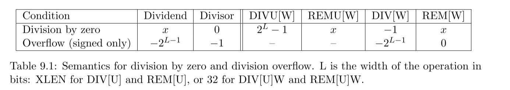

M扩展¶
定义了整数乘除法指令扩展（M扩展）的标准。大家也可以自己读The RISC-V Instruction Set Manual Volume I: Unprivileged ISA Chapter 7。
整数乘法¶

他们的具体指令可以自行查阅The RISC-V Instruction Set Manual Volume I: Unprivileged ISA Chapter 24，有一个RV64G指令列表。
MUL¶
res = GPR[rs1] * GPR[rs2]
GPR[rd] = res[XLEN-1:0]
注：两个GPR为64位的情况下，MUL指令得到乘法后低64位的结果。
MULH[[S][U]]¶
这里共有3条指令，分别是MULH、MULHU、MULHSU。
MULH中的H表示High，即取结果的高位的意思，对于RV64，高位取乘法结果共128位中，[127:64]的部分。
U表示无符号乘法（请自己思考有符号和无符号的区别）。
SU表示左边操作数（rs1）取有符号，右操作数（rs2）取无符号，用于乘法拆分。
res =
MULH: signed(GPR[rs1]) * signed(GPR[rs2])
MULHU: unsigned(GPR[rs1]) * unsigned(GPR[rs2])
MULHSU: signed(GPR[rs1]) * unsigned(GPR[rs2])
GPR[rd] = res[2*XLEN-1:XLEN]
MULW¶
RV64指令，将源寄存器的低32位相乘，得到的64位结果，符号扩展低32位。
res = GPR[rs1][31:0] * GPR[rs2][31:0]
GPR[rd] = sign-extension(res[31:0])
指令融合¶
当软件要得到128位的乘法结果时，往往会使用MUL+MULH的指令序列，这个时候可以考虑在乘法器硬件上保留上次运算的完整128位结果，如果操作数和操作类型都相同，仅有H不同，则直接输出，这样做性能会有些许优化。
整数除法¶

DIV[U]¶
用寄存器 (un)signed x[rs1] 的值除以寄存器 (un)signed x[rs2] 的值，向零舍入，把商写入 x[rd] 。
DIV、DIVU分别对应计算结果的 signed 和 unsigned。
REM[U]¶
用寄存器 (un)signed x[rs1] 的值除以寄存器 (un)signed x[rs2] 的值，向零舍入，把余数写入 x[rd] 。
REM中余数的符号和被除数rs1相同。
DIV[U]W / REM[U]W¶
RV64指令，将源寄存器的(un)signed 低32位相除，得到的32位结果，符号扩展为64位结果，写入 x[rd] 中。
指令融合¶
当软件要得到128位的乘法结果时，往往会使用DIV+REM的指令序列，这个时候可以考虑在除法器硬件上保留上次运算的结果和余数，如果下一次出现的指令仅有DIV/REM不同，是否Unsigned以及是否32位相同，则直接从保存的结果输出，这样做性能会有些许优化。
特殊情况处理¶

-
除以0
商 = 全1（二进制）
余数 = 被除数
-
有符号除法溢出
商 = 被除数
余数 = 0
注意：没有除零异常。 要测试除数是否为零，只需要在除法操作之前加入一条用于测试的 beqz 指令。RV32I 不会因为除零操作而 trap，因为极少数程序需要这种行为，而且在那些软件中可以很容易地检查是否除零。当然，除以其它常数永远不需要检查。